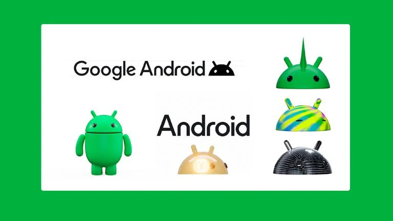
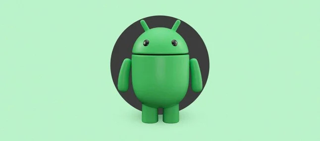

Google muda logo e mascote do Android
05/09/2023 às 16h47

O Google anunciou uma nova identidade visual ao sistema operacional Android nesta terça-feira (5). A mudança conta com um novo logo, tipografia remodelada e uma nova versão do mascote Bugdroid, o robozinho que acompanha a plataforma ao longo dos anos.
É a primeira grande mudança na marca Android desde 2019, quando o logo foi alterado para uma fonte na cor preta, o Bugdroid ganhou uma versão minimalista em 2D e o Google abandonou os nomes de doces a cada grande atualização. Naquela ocasião, o objetivo era simplificar e facilitar a leitura dos lançamentos.
Segundo o Google, a mudança de agora tem o objetivo de oferecer maior poder de escolha e autonomia para a marca refletir o que é o Android: “algo que dá liberdade para as pessoas criarem nos seus próprios termos”, explica a empresa. Isso é também uma referência ao fato de o Android ser um sistema aberto à criatividade dos usuários e a outras companhias que criam sistemas derivados.
CES 2024: Google apresenta o nome do mascote do Android no evento
10 de janeiro de 2024

O Google já apresentou algumas novidades durante a CES 2024. Um pouco mais sutil em comparação com os novos recursos para carros é o “batismo” do mascote em referência ao seu sistema operacional, o Android. Agora, com o nome oficial de “The Bot”, ele representará várias novidades relacionadas ao sistema no futuro.
Em geral, o robô é sempre lembrado quando a empresa comemora datas importantes, além de ser o protagonista de estátuas comemorativas de cada novo lançamento implementado. Anteriormente, a comunidade e o público acabaram por adotar o nome de “Bugdroid” para o mascote de forma não oficial. Mas, esse período parece ter chegado ao fim.
Pode-se dizer que esse anúncio é um complemento para a iniciativa do próprio Google em setembro do ano passado, quando a empresa lançou um novo logotipo para o Android, dando a ele um aspecto tridimensional. Além disso, a companhia aproveitou a oportunidade para renovar o seu widget “At a Glance”.
A ocasião ainda contou com a explicação sobre a implementação do novo design, que foi lançado com o objetivo de facilitar a transição do mundo digital para o real, além de tornar o robô mais versátil e adaptável a diferentes contextos, plataformas e canais. Portanto, pode ser que vejamos mais destaque para o mascote The Bot nos próximos meses.
O Google também acredita que a atualização ajudou o sistema a ter mais dimensão e caráter, abrindo mais possibilidades de personalização com o uso de acessórios, materiais e cores.